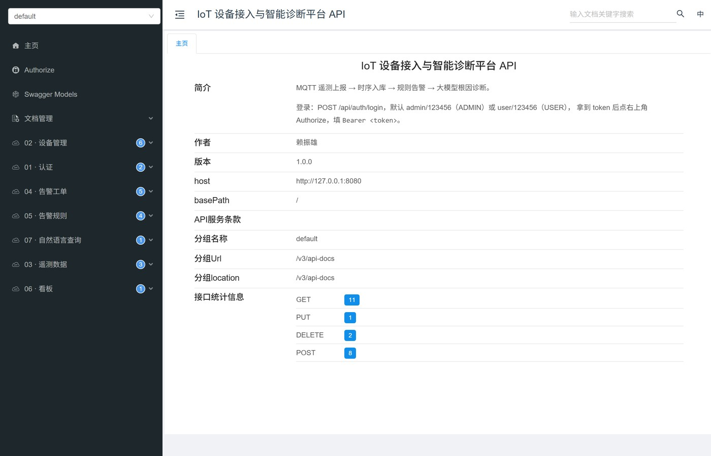

IoT 设备接入与智能诊断平台
MQTT 直接内嵌进 Spring Boot——不装 EMQX、不碰 Docker；告警防抖、工单留痕，大模型诊断超时自动降级。

平台仪表盘：设备总览与遥测数据
Overview
这个平台
- 内嵌 Moquette 作 MQTT Broker——免装 EMQX、免 Docker，一个普通 Spring Boot 应用就是整个服务端。
- 一机一密：deviceKey + secret，每台设备独立凭据，并做主题归属校验——设备无法越权发布到别人的主题。
- 遥测按 (device_id, metric, ts) 联合索引落窄表；每项指标的最新值同步进设备影子缓存，读取直达缓存。
- 告警引擎用「连续 N 点越限」防抖（单点坏值不误报），配工单状态机：TRIGGERED → ACKED → CLOSED。
- 接通义千问做根因诊断、按设备类型切换知识库；12 秒超时自动降级到本地规则诊断——诊断不依赖模型可用性。
Implementation
怎么实现的
高负载下的接入
上报走独立线程池，存储慢不会阻塞 Broker；仪表盘读最新值全部走设备影子缓存，不打窄表。
告警质量
按指标类型调校「连续 N 点越限」的防抖窗口；每次触发生成工单并附带原始证据，状态机保证确认与关闭的动作留痕。
大模型诊断的安全接法
诊断提示词按设备类型隔离、输出结构化，调用被 12 秒超时硬约束；超时或异常即降级到确定性的本地规则——平台把大模型当加速器，而不是依赖项。
按生产标准测试
45 个 JUnit 5 用例覆盖防抖边界、工单状态机与诊断降级（核心业务类行覆盖 69%），GitHub Actions 每次推送自动执行。
Demo
界面


Results
数字
| 项目 | 数值 | 说明 |
|---|---|---|
| 单元测试 | 45 个（JUnit 5） | 防抖边界 / 工单状态机 / 诊断降级 |
| 核心行覆盖 | 69% | 核心业务类 |
| 吞吐（本机压测） | ≈4,450 条/秒 | 6 并发 9000 点，本机压测口径，非服务器基准 |
| 持续集成 | GitHub Actions | 每次推送自动跑测试 |